-
1760
Navigation Acts
According to this British policy, the American colonies could only buy and sell goods and services to Great Britain.
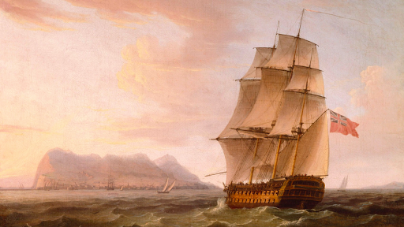 -
October 7, 1763
Proclamation of 1763
Following the French and Indian War, the British declare that the American colonists are not allowed to expand westward farther than the Appalachian Mountains.
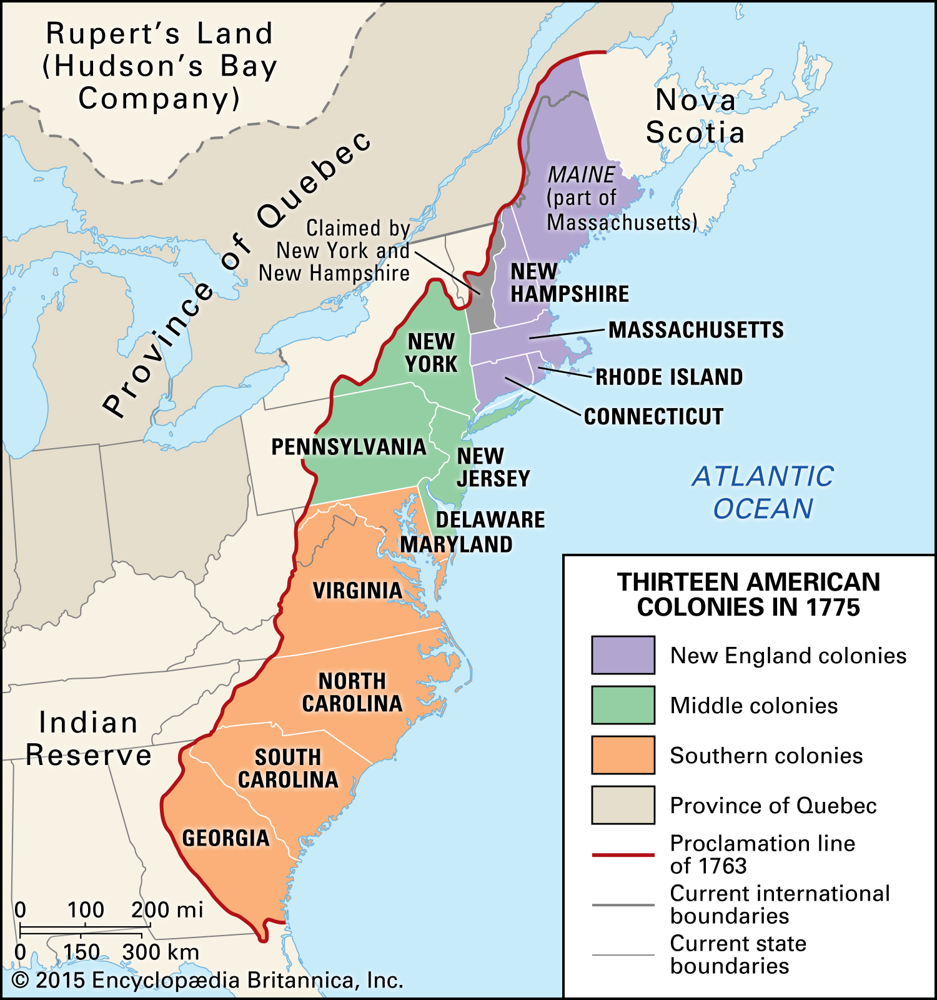 -
1764
Sugar Act
This piece of British legislation is passed, aimed at ending the sugar smuggling trade from the French and the Dutch West Indies to the American colonies, and to provide more revenue for the British Empire.
-
March 24, 1765
Quartering Act
The Quartering Act is passed. It is a parliamentary provision that requires colonists to provide food, water, shelter, fuel, and transportation to British forces stationed in their towns or villages.
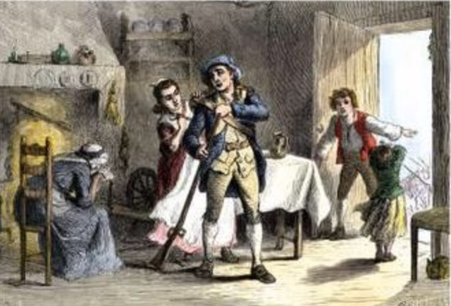 -
1765
Stamp Act
The Stamp Act is passed, and is the first British attempt to raise revenue through taxation of all colonial mail, after the hefty financial impacts from the Seven Years' War and Pontiac's War.
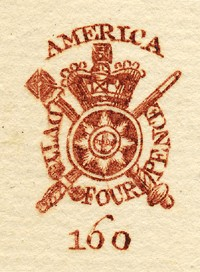 -
June 15, 1767
Townshend Acts
A series of four acts passed by the British parliament in an attempt to exert authority over the colonies through suspending the New York Assembly and through strict tax policies on various goods.
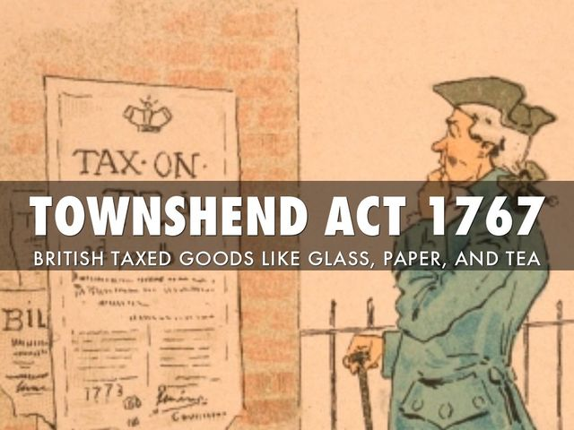 -
March 5, 1770
Boston Massacre
A skirmish between British troops and a colonist mob in Boston, Mass. occurs. During the confrontation, three colonists are shot and killed immediately, while two of the eight wounded die later. This event adds fuel to the growing fire in the colonies.
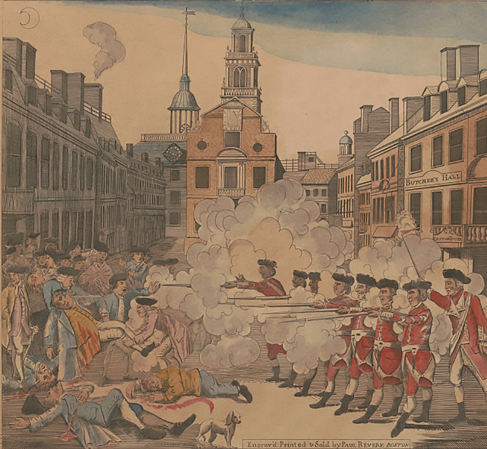 -
1773
Tea Act
The Tea Act is enacted, which makes English tea marketable in America, in order to help the British East India Company sell millions of pounds of tea stored in England. It grants this company a monopoly on tea in the colonies.
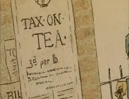 -
December 16, 1773
Boston Tea Party
A political protest occurs at Griffin's Wharf in Boston Harbor. American colonists frustrated with the Townshend and Tea Acts dump 342 chests of tea owned by the British East India Company into the harbor. The protest is the first major defiance against British rule.
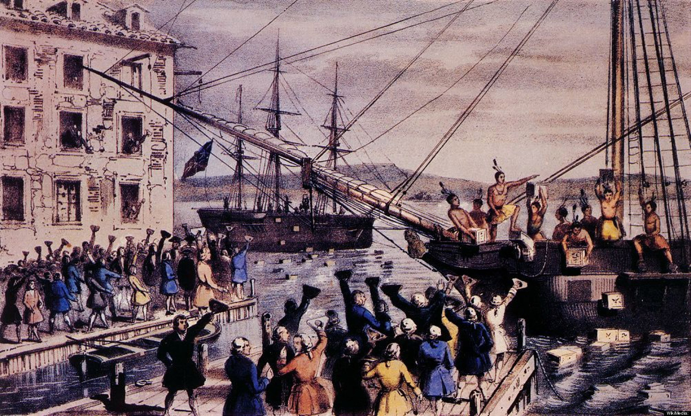 -
1774
Intolerable Acts
Also known as the Coercive Acts, this set of legislation is a response to the Boston Tea Party, which aimed to restore order in Massachusetts and punish the colonists for the Boston Tea Party. They closed Boston Harbor, restricted town meetings in Massachusetts, made British officials immune to criminal prosecution in Massachusetts, and a new Quartering Act.
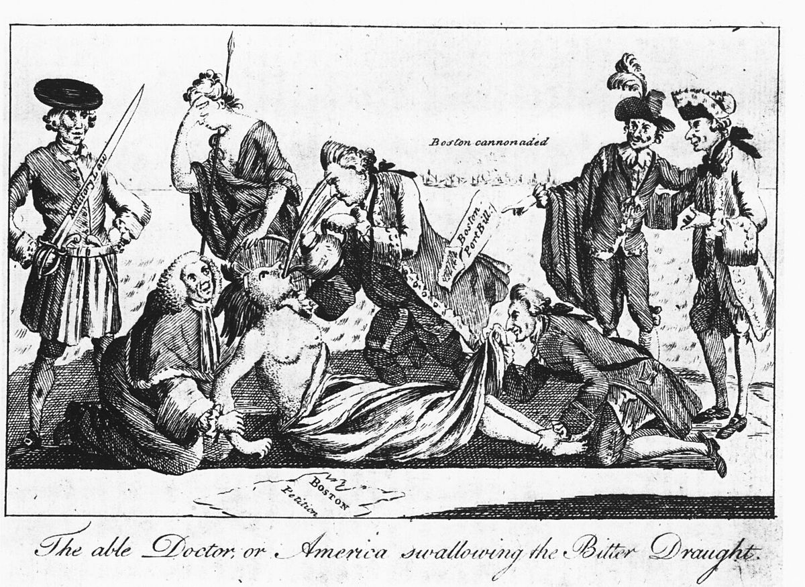 -
September 5, 1774
First Continental Congress
In response to the Intolerable Acts, the First Continental Congress convenes in Philadelphia. Every state except Georgia sends a delegation, and the delegates draft a declaration of rights and grievances. Among the delegations are George Washington, John Adams, and John Jay.
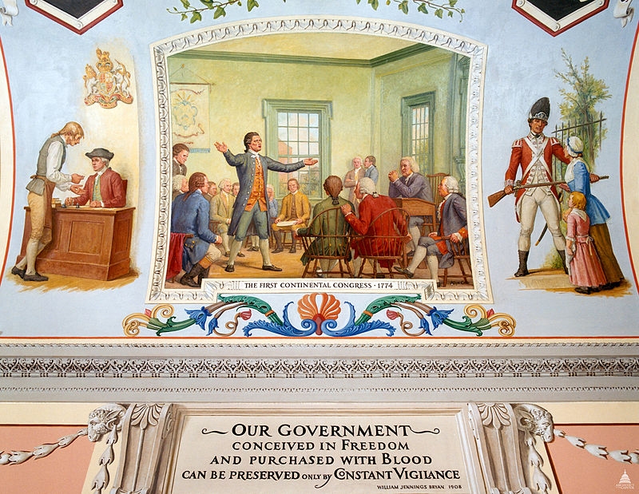 -
April 19, 1775
Battle of Lexington and Concord
The first battle of the American Revolution occurs. On April 18, British troops march to Concord, Mass. to seize a weapons cache. Colonial militias opposed the troops, and a confrontation on the Lexington town green began the fighting. By the end of the battle, British troops began retreating back to Boston.
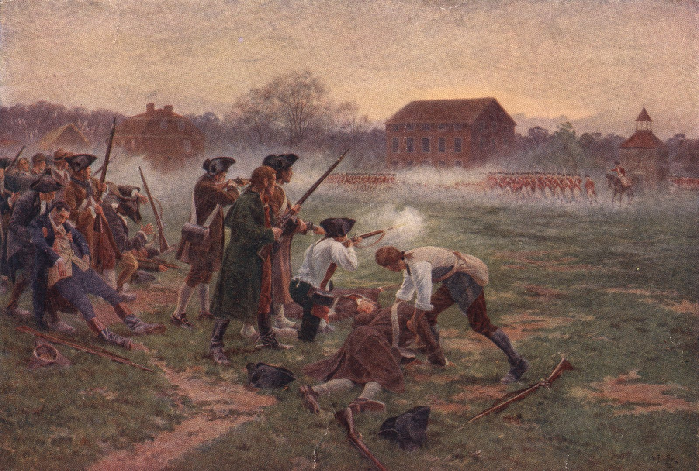 -
May 10, 1775
Second Continental Congress
The Second Continental Congress reconvenes in Philadelphia after the beginning of the American Revolution. The Congress begins thinking about independence. The Congress will not disband until after the Revolutionary War.
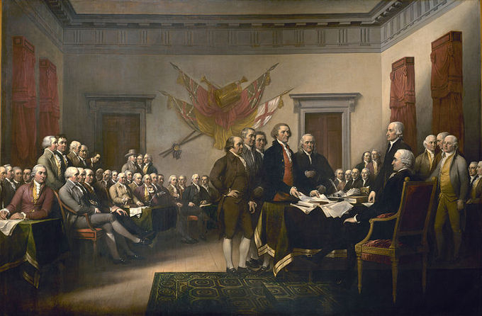 -
January 9, 1776
Common Sense
Author Thomas Paine publishes a pamphlet entitled Common Sense, advocating for American independence. Between the 16th and 19th centuries, pamphlets were a popular method for spreading information. Common Sense is considered one of the most influential pamphlets in the history of the United States. It unites citizens and leaders behind independence.
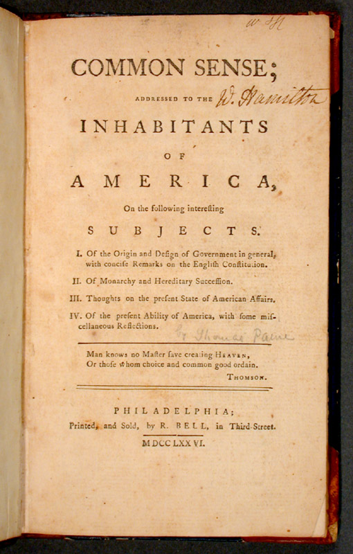 -
July 4, 1776
Declaration of Independence
The Declaration of Independence is accepted and signed by the Second Continental Congress in Philadelphia. It is the first formal statement by the people of a country asserting their right to choose their own governmental system and representatives. It was a historic part of the development of democratic government. Most historians accept that the actual date of the signing was August 2, even though the document was initally accepted on July 4.
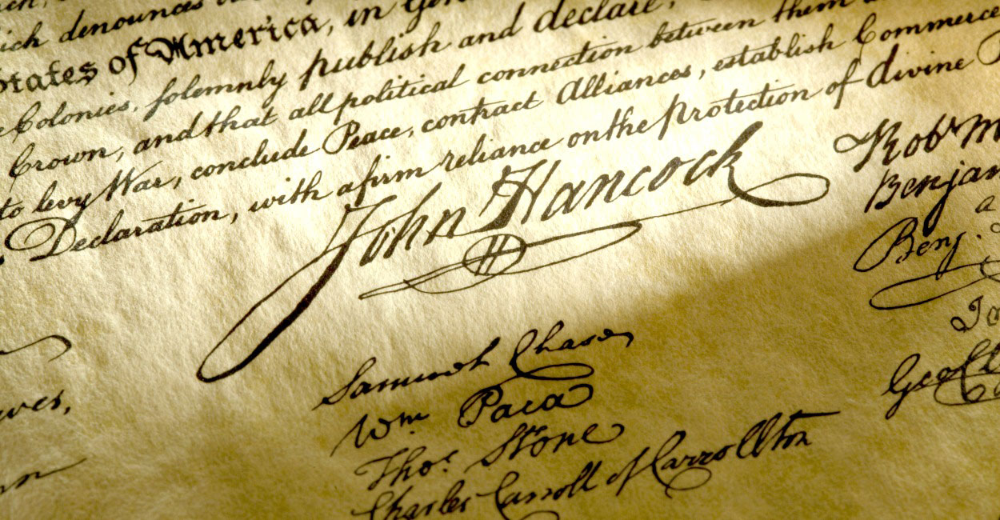